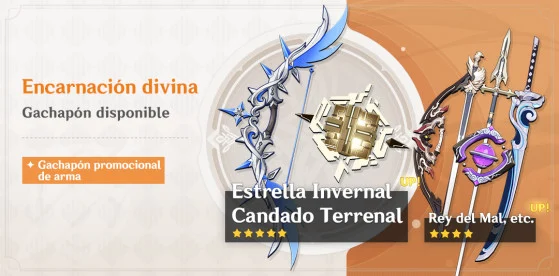
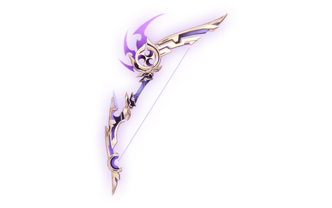

En esta primera ocasión les traemos una guía muy extensa sobre un personaje que (una vez más) llegó a todos los servidores del juego, Tartaglia.
Tartaglia
El Undécimo Heraldo de los Fatuis
- Rareza: ✩✩✩✩✩
- Arma: Arco
- Elemento: Hydro
Dentro del meta actual, Tartaglia es un On-field DPS (es decir, un personaje que se encarga de realizar mucho daño mientras está en el campo) que brilla por su gran aplicación de hydro en área que es aprovechada por el resto de su team, funcionando como enabler hydro. Tomando en cuenta que el elemento hydro está presente en la mayor parte de los teams meta en la actualidad, estas características lo vuelven un muy buen personaje por el que vale totalmente la pena tirar. Sin embargo, debido a su estilo de juego tan único cambiando entre dos armas, puede ser un personaje difícil de masterizar.
A diferencia de Raiden Shogun, con Tartaglia tendremos que utilizar nuestra “segunda forma” el tiempo que necesiten nuestros off-field DPS, sin excedernos mucho (max 15s) para no extender tanto el TdE de la habilidad, es por esto que el brillo de Tartaglia se verá más presente en composiciones con personajes que puedan realizar un alto daño estando fuera de campo (a como veremos más adelante).
Pese a ser un personaje de arco brilla más con su arma cuerpo a cuerpo. Gracias a que esta imbuye tanto sus ataques normales como cargados en hydro, y junto con su pasiva “Obstrucción de flujo” se vuelve excelente aplicando hydro en área, siendo esto lo que le da el título de enabler hydro. Ya que Tartaglia aplica hydro muy rápido durante su forma melé, no es recomendable utilizarlo en composiciones donde se pretenda que él haga las reacciones, dado que al poco tiempo aplicará el status de “Mojado” en sus enemigos y serán sus soportes quienes realizarán las reacciones elementales.
Mientras, su habilidad definitiva lo vuelve un excelente nuker, ya que tiene unos escalados muy altos y también aplica la marca que nos proporciona su habilidad elemental. Su daño es tan elevado que vale totalmente la pena que, en una rotación, sea él quién vaporice utilizándola. Usarla en su forma rango realizará mucho menos daño, pero nos otorgará algo de energía. Aún así, no vale la pena usarla de esta forma.
˚₊· 𝑬𝒔𝒕𝒓𝒆𝒍𝒍𝒂 𝑰𝒏𝒗𝒆𝒓𝒏𝒂𝒍 ·₊˚
El nuevo arco de 5* que vendrá en el banner de armas junto al banner de Tartaglia va a ser la mejor arma para este personaje, al ser esta su Signature Weapon es de esperar que sea el arma que mejor le va. Sin embargo, la diferencia no es tanta como cabría esperar, comparándola con otras armas, por lo que si tienes alguna de las siguientes no es recomendable tirar por esta arma. Aun así, es su mejor opción actualmente.
Esta arma nos sube el ataque al golpear o usar habilidades, por lo que todos sus daños se ven aumentados, contando que el Riptide es un porcentaje bastante alto de su DPS total, este se ve también beneficiado por al aumento de ataque, por tanto, nos da un mejor resultado en el DPS.
˚₊· 𝑨𝒈𝒊𝒕𝒂𝒅𝒐𝒓 𝒅𝒆𝒍 𝑹𝒆𝒍𝒂𝒎𝒑𝒂𝒈𝒐 ·₊˚
Esta arma es la segunda mejor opción para Tartaglia y no se queda muy atrás, es un arma originalmente pensada para Yoimiya pero debido a que el playstyle de Yoimiya y Tartaglia son bastante similares acaba siendo una muy buena opción para este último. El punto negativo de esta arma y lo que la hace quedar atrás es que su aumento de DPS es únicamente para sus ataques normales, y estos solo constituyen un 26.9% de su DPS en una rotación. Si no fuera por esto esta arma podría ser mejor que Estrella Invernal.